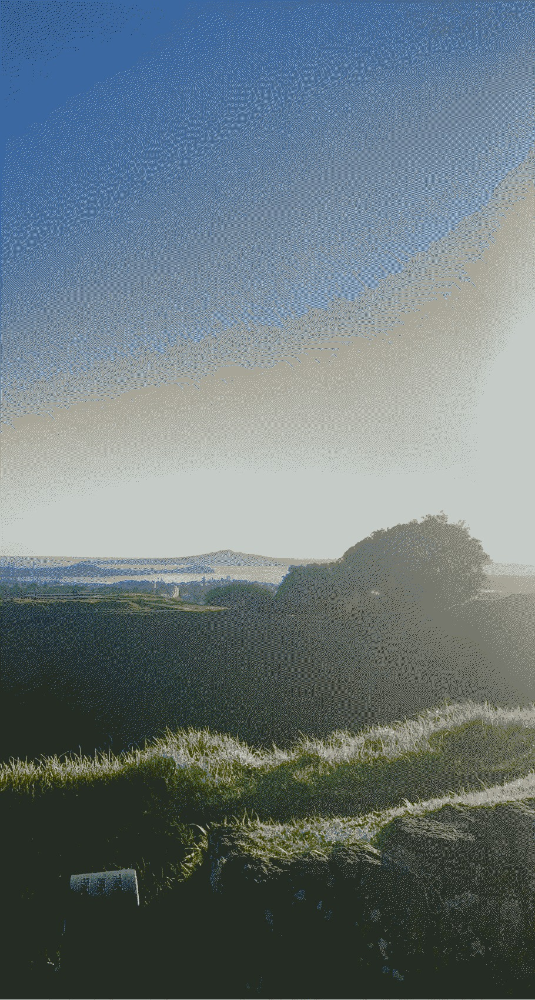
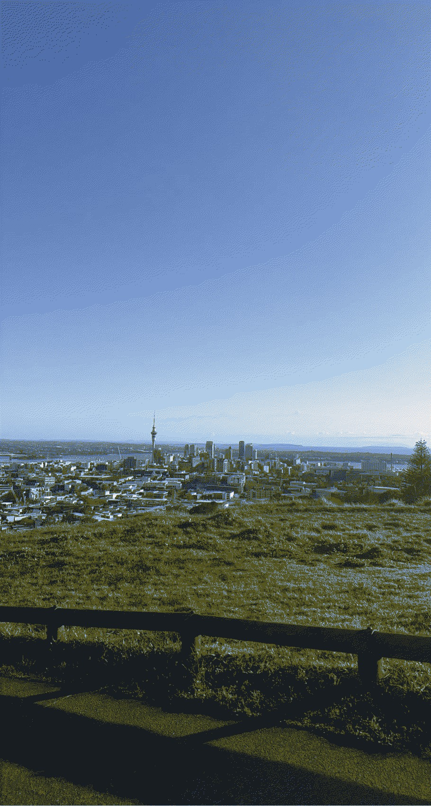
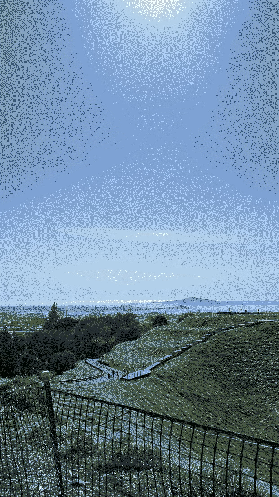

7:00am

At 7:00am, Mt Eden is serene and peaceful. The early morning light casts a beautiful glow over the landscape, creating a tranquil atmosphere. It's a great time to enjoy the quiet
and take in the breeathtaking views before the hustle and bustle of the day begins.
8:00am

At 8:00am, this is when Mt Eden starts to come alive with more visitors and activity. The morning sun illuminates the landscape, casting vibrant colours across the sky.
It's a great time to enjoy a peaceful walk or hike while soaking in the beauty of nature.
9:00am

At 9:00am, Mt Eden starts to buzz with activity. You'll see more people enjoying the trails, taking in the stunning views, and getting their morning
exercise. It's a popular time for dog owners to take their furry friends for a walk, adding an extra dose of cuteness to the scenery.
Low Carbon
In this website, both dithered images and a default typeface have been used to minimise
the carbon footprint of this site.
Using dithered imagees on the website means there are fewer colours, and therefore can be compressed more efficiently.
This means the image file sizes are smaller, which requires less data to be transferred when someone visits this website.
Because data transfeer requires energy, using dithered images helps reduce the energy consumption and, in turn, lowers the carbon footprint
of the website. This is a small but impactful way to make websites more environmentally friendly.
Alongside this, using a default typeface can help lower the carbon footprint of a website because default
typefaces are usually already installed on a users device. This means that the website doesn't have tto load and transfer additional font files, whihc in turn,
saves data and reduces energy consumption. This again is a simple way to make websites more efficient and eco-friendly.
Low Carbon in future design
Low carbon web design is becoming increasingly important as our digital activities continue to have a significant environmental impact.
As our digital footprint continues to grow, so does the energy consumption of the internet.
By implementing more practices such as optimising code, compreessing images, and minimising data transfer, we can reduce the energy consumption
and carbon emissions associated with website usage. This nott only helps combat climate change but also improves user experience
by making websites faster and more efficient. It could be an exciting opportunity to combine technology and sustainability for a better future.